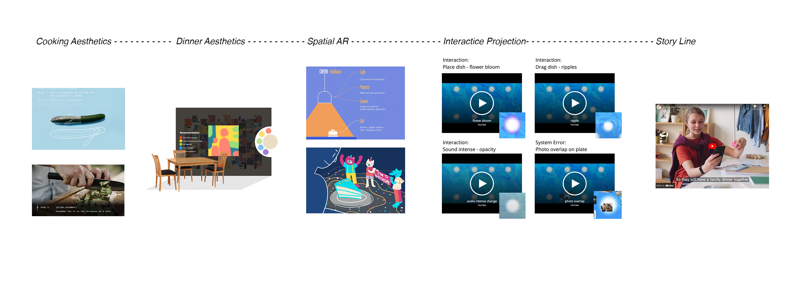

Caena — Dinner Experience
Dinner exprience with table-projection which help with the family connection
Eating is an everyday practice that is slowly becoming a routine. We want to recreate aesthetic in it. We originally focused on cooking dinner, but later changed it to the process of having dinner. We want to make the dinner a profound, precious, intimate moment to connect with food and others.
